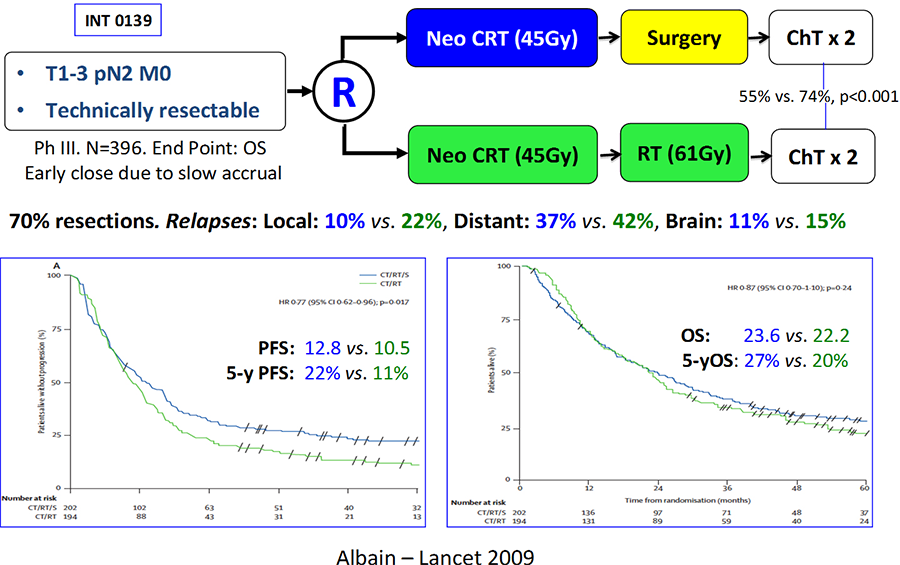
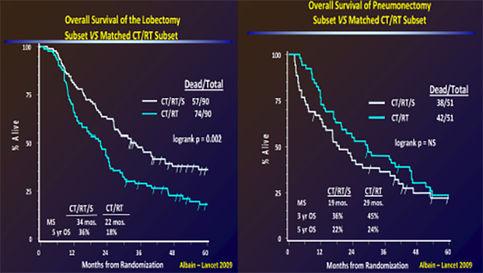
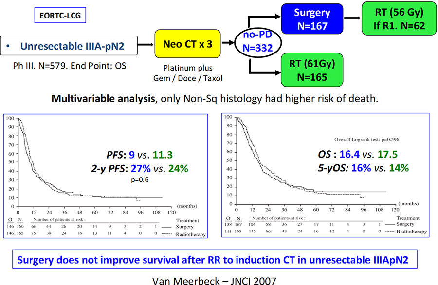

MÓDULO 3 : Estadios IIIA y IIIB

3.4 Papel de la cirugía tras tratamiento de inducción en estadio IIIA N2 frente a QT-RT sin cirugía
Dos importantes ensayos fueron designados para evaluar el papel de la cirugía en pacientes con estadio III A N2 y en ninguno de ellos la cirugía demostró ser superior al tratamiento de QT y RT. Son el estudio Intergroup 0139 y el estudio EORTC 08941.
Ambos ensayos reclutaron pacientes con enfermedad pN2, para los cuales se consideró el tratamiento con QT- RT como el brazo control. Por lo tanto, ninguno de estos ensayos se diseñó para pacientes con enfermedad N2 mínima, candidatos a cirugía de entrada.
Ensayo 0139 Intergroup
Se incluyeron 429 pacientes con estadios pT1-3, N2 que recibieron QT-RT concurrente de 45 Gy con dos ciclos de cisplatino y etopósido.(puntualizar que en la clasificación TNM8, los pacientes T3N2 serían clasificados IIIB).
Si no había progresión en la reevaluación tras el tratamiento de inducción, en un brazo se realizó resección quirúrgica con linfadenectomía mediastínica y el otro brazo completo RT hasta 61 Gy.
Ambos grupos recibieron QT de consolidación con dos ciclos de cisplatino y etopósido. Para el grupo asignado a resección quirúrgica, se realizó toracotomía en el 81% de los pacientes, y en el 71% la resección fue completa. Se observaron respuestas completas patológicas en el 18% y enfermedad N0 en el 46%.
La mortalidad relacionada con el tratamiento fue mayor en el brazo quirúrgico, con 16 muertes (7,9%), comparado con cuatro muertes (2,1%) en el brazo de QT-RT. La mayoría de las muertes posquirúrgicas fueron causadas por el síndrome del distress respiratorio del adulto.
Catorce pacientes (26%) tratados con neumonectomía fallecieron. La mayoría de las neumonectomías fueron practicadas en pacientes con tumor mínimo o ausencia de tumor residual. La mortalidad asociada a la lobectomía fue del 1%.
La SLP fue significativamente superior en el brazo de cirugía (12,8 vs 10,5 meses; HR: 0,77; P = 0,017), sin embargo, la SG fue similar (23,6 vs 22,2 meses; HR: 0,87; P = 0,24), fundamentalmente debida a la mortalidad postoperatoria.
INT O139: Surgery does NOT improve survival
Por otra parte, los resultados de un sub-análisis post-hoc mostraron una ventaja en SG a los 5 años para la cirugía en pacientes que fueron candidatos a lobectomía (36% vs 18%), no en aquéllos que precisaron neumonectomía (22% vs 24%).
INT 0139: Análisis de subgrupos: beneficio en SG en pacientes con lobectomía
Ensayo 08941 de la EORTC en Europa
Es el único ensayo fase III comunicado hasta la fecha con pacientes con enfermedad de gran volumen estadio IIIA (pN2), para los que el brazo control de QT seguida de RT es el considerado como estándar.
El brazo experimental consistió en QT de inducción seguida de cirugía.
Tras tres ciclos de QT basada en cisplatino o carboplatino (el régimen específico era seleccionado por el investigador), los pacientes que no obtuvieron respuesta o progresaron fueron sacados del ensayo, mientras que aquellos con una respuesta objetiva fueron aleatorizados a recibir tratamiento quirúrgico o RT con 60 Gy (2 Gy/fracción/día).
No se observaron diferencias en la SLP ni en la SG, con una supervivencia a 5 años del 16%, comparada con el 14%. Los investigadores concluyeron que la QT seguida de RT debía ser el tratamiento estándar en pacientes con estadio IIIA (N2) irresecable.
EORTC 08941: Surgey does NOT improve survival
Un tercer estudio randomizado (que fue cerrado de forma prematura por lento reclutamiento), el ESPATUE, tampoco objetivo un beneficio en supervivencia con cirugía tras QT y QT-RT de inducción sobre la QT-RT radical.
En ninguno de estos ensayos se demuestra un claro beneficio con la cirugía en estadios IIIA N2 por lo que en estos pacientes el tratamiento estándar es la QT-RT radical sin cirugía. La resección quirúrgica debería reservarse para pacientes seleccionados e implementarlo cuidadosamente después de una evaluación multidisciplinar, lo cual es fundamental en el contexto de esta enfermedad.